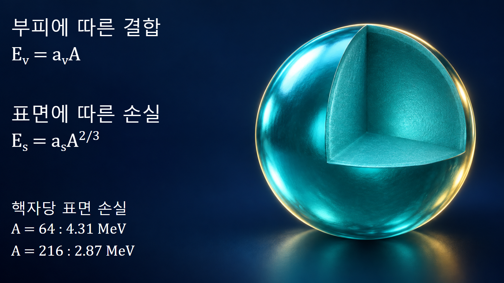
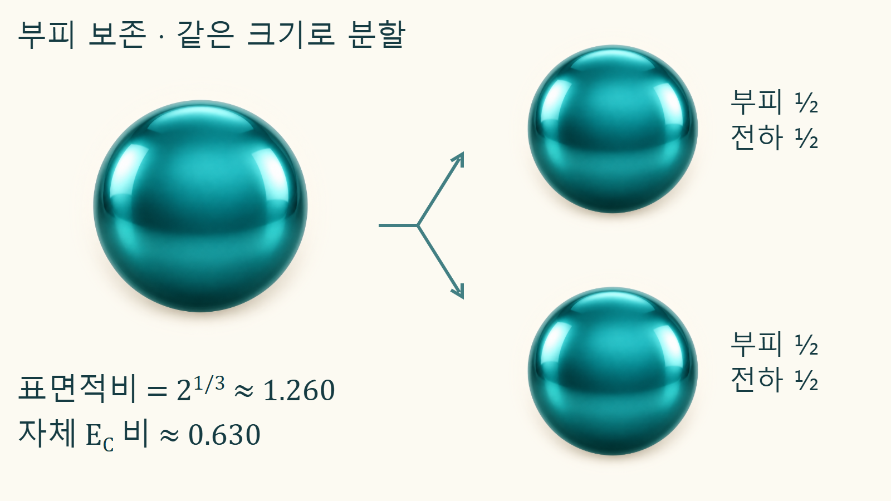

원자와 원자핵의 기초 · 014
액적모형
원자핵의 집단적 결합과 변형을 전하를 띤 액체방울처럼 설명하는 모형
액적모형은 원자핵을 전하를 띤 작은 방울에 비유해 평균 결합에너지와 집단적인 변형을 설명합니다. 핵 전체를 묶는 효과, 표면에서 잃는 결합, 양성자의 전기적 반발을 따로 계산합니다. 개별 핵자의 정확한 궤도나 모든 핵종의 질량을 재현하는 모형은 아닙니다.
핵을 방울에 비유하는 근거
보통 크기의 원자핵은 질량수가 늘어도 평균 핵물질 밀도가 크게 변하지 않으며, 핵력은 가까운 이웃과의 상호작용을 중심으로 결합을 만듭니다. 이는 액체의 응집과 닮아 있습니다. 핵 안쪽의 핵자는 여러 이웃과 상호작용하지만 표면의 핵자는 상대적으로 이웃이 적습니다. 이 차이를 표면에너지 비용으로 나타내면 핵이 둥근 모양을 선호하는 평균 경향을 이해할 수 있습니다. 여기서 액체라는 말은 모형의 비유이며 원자핵에 물의 점도나 표면장력을 그대로 넣는다는 뜻은 아닙니다.
결합에너지 장부의 다섯 항
결합에너지 B를 자유 핵자들에서 원자핵을 만들 때 얻는 양의 에너지로 정의합니다. 반경 R∝A1/3인 구형 근사에서 대표적인 반경험식은 다음과 같습니다.
B = avA − asA2/3
− acZ2/A1/3
− aa(A−2Z)2/A + δB
A는 질량수, Z는 양성자수이고 각 계수와 B의 에너지 단위는 MeV입니다. 계수는 측정된 질량에 맞추어 정하므로 문헌마다 다릅니다. 쿨롱항을 Z² 대신 Z(Z−1)로 쓰는 식도 있어 서로 다른 식의 계수를 섞지 않습니다. 비대칭항과 짝지음항은 단순한 고전 액체만으로 설명되지 않는 양자적 성질을 보완합니다.
| 항 | 결합에너지 B의 기여 | 물리적 의미 |
|---|---|---|
| 부피 | 증가 | 핵 전체의 평균 결합 |
| 표면 | 감소 | 표면 핵자의 부족한 이웃 |
| 쿨롱 | 감소 | 양성자들의 전기적 반발 |
| 비대칭 | 감소 | 중성자·양성자 수 불균형 |
| 짝지음 | 짝홀 조합에 따라 다름 | 같은 종류 핵자의 쌍 형성 효과 |
표면 손실은 핵자당 얼마나 줄어드는가
교재의 한 계수 묶음에서 av=15.56 MeV, as=17.23 MeV를 사용해 부피항과 표면항만 분리해 보겠습니다. A=64이면 부피항은 15.56×64=995.84 MeV이고, 표면 손실은 17.23×642/3=275.68 MeV입니다. 표면 손실을 핵자 수로 나누면 약 4.31 MeV입니다. A=216에서는 표면 손실이 17.23×36=620.28 MeV로 더 크지만 핵자당으로는 약 2.87 MeV로 낮아집니다. 핵이 커질수록 표면의 비중이 줄기 때문입니다. 이 숫자는 부피·표면 항의 비교일 뿐 해당 핵종의 전체 결합에너지가 아닙니다.

양성자 반발과 중성자 불균형의 비용
쿨롱항은 같은 양전하가 한 부피에 모여 생기는 에너지 비용이므로 B에서 뺍니다. 양성자가 많을수록 그 비용은 빠르게 커집니다. 비대칭항은 N과 Z의 차이가 클 때 생기는 비용을 평균적으로 표현하며, (A−2Z)²=(N−Z)²를 사용합니다. 중성자가 전기적 반발 없이 결합에 참여하더라도 무작정 늘릴 수 없는 이유입니다. 짝지음 보정 δB는 보통 짝수-짝수 핵에서 양수, 홀수-홀수 핵에서 음수, 홀수 질량수에서 0으로 둡니다. 질량식에서는 같은 보정의 부호가 반대로 나타날 수 있으므로 B의 식인지 질량의 식인지 먼저 확인합니다.
한 방울을 같은 부피의 두 방울로 나누는 계산
부피를 보존하면서 반지름 R의 구 하나를 같은 크기의 구 두 개로 나누면 각 반지름은 R/21/3입니다. 두 구의 총 표면적을 원래 표면적으로 나눈 비율은 21/3≈1.260이므로 표면적은 약 26% 증가합니다. 전하도 절반씩 나누고 두 구가 아주 멀리 떨어져 서로의 반발에너지를 무시할 수 있다면, 두 구의 자체 쿨롱에너지 합은 원래의 2−2/3≈0.630배가 됩니다. 표면 비용은 증가하고 자체 전기적 에너지는 감소하는 경쟁이 드러납니다. 실제 분열 직후처럼 두 조각이 가까우면 조각 사이의 상호 쿨롱에너지를 반드시 더해야 합니다.

에너지 차이와 분열장벽이 다른 이유
나뉜 상태의 에너지가 낮더라도 중간 변형 경로의 에너지가 더 높을 수 있습니다. 구형에서 길쭉한 모양, 목이 좁아지는 모양을 거쳐 분리될 때 표면적과 전하분포가 함께 변하기 때문입니다. 이 경로에서 넘어야 하는 에너지 높이가 분열장벽입니다. 따라서 최종 두 구의 표면적·자체 쿨롱에너지 비율만으로 장벽 높이나 분열 속도를 구할 수 없습니다. 중성자 흡수로 얻는 들뜸에너지, 양자 터널링과 변형 상태의 구조도 결과에 관여합니다.
평균 모형에 껍질 효과를 더해야 하는 경우
매끈한 액적항만으로는 특정 양성자수·중성자수에서 나타나는 추가 안정성과 개별 에너지 준위를 충분히 설명하지 못합니다. 정밀 핵질량이나 분열장벽에서는 껍질 보정과 짝지음, 표면 확산 및 다양한 변형을 더한 모형을 사용합니다. 특히 실제 핵분열 생성물의 질량분포가 항상 같은 크기의 두 조각으로 모이지 않는 현상은 단순한 대칭 분할 그림만으로 설명할 수 없습니다. 이 글의 두 방울 계산은 경쟁하는 에너지 항을 분리해 보는 사고실험입니다.
핵질량과 핵분열 자료를 읽는 출발점
액적모형의 장점은 어떤 변화가 결합을 유리하게 하거나 불리하게 하는지 에너지 항별로 설명한다는 데 있습니다. 전체 질량이 잘 맞는다는 사실과 결합에너지·분리에너지가 필요한 정밀도로 맞는다는 사실은 다릅니다. 큰 정지질량에 대한 작은 상대오차라도 에너지 차이에서는 중요할 수 있습니다. 계산에서는 식의 부호, 계수 묶음, 입력 A·Z와 빠진 보정항을 기록하고 핵종별 평가자료와 비교해야 합니다. 다음 껍질모형에서는 액적모형의 평균 경향 위에 개별 양자상태의 구조를 더해 살펴봅니다.